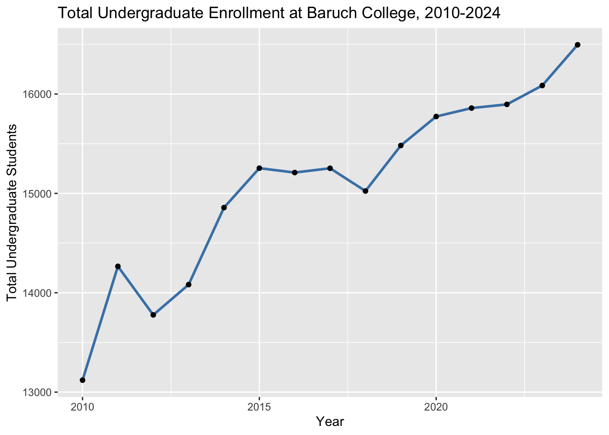

Code
knitr::opts_chunk$set(
warning = FALSE,
message = FALSE
)maryononye
This mini-project examines patterns in college enrollment and student diversity using IPEDS data. The analysis focuses on how undergraduate and graduate enrollment vary across institutions, how Baruch College compares over time, and how changes in student demographics can be interpreted in relation to broader trends at institutions such as California public universities.
This section loads the required R packages and prepares the IPEDS dataset for analysis. In particular, I create indicator variables that identify institutions belonging to the CUNY system and public universities in California.
# A tibble: 6 × 24
institution_id year level enrollment_m_aian enrollment_f_aian
<dbl> <int> <chr> <dbl> <dbl>
1 100654 2010 all graduate 2 0
2 100654 2010 all undergrad 2 1
3 100654 2010 first year undergrad 0 0
4 100663 2010 all graduate 5 16
5 100663 2010 all undergrad 13 22
6 100663 2010 first year undergrad 0 3
# ℹ 19 more variables: enrollment_m_asia <dbl>, enrollment_f_asia <dbl>,
# enrollment_m_bkaa <dbl>, enrollment_f_bkaa <dbl>, enrollment_m_hisp <dbl>,
# enrollment_f_hisp <dbl>, enrollment_m_nhpi <dbl>, enrollment_f_nhpi <dbl>,
# enrollment_m_whit <dbl>, enrollment_f_whit <dbl>, enrollment_m_2mor <dbl>,
# enrollment_f_2mor <dbl>, enrollment_m_unkn <dbl>, enrollment_f_unkn <dbl>,
# enrollment_m_nral <dbl>, enrollment_f_nral <dbl>, institution_name <chr>,
# state <chr>, is_cuny <lgl>To verify that the is_calpublic variable correctly identifies institutions in the University of California and California State systems, I generated a list of the institutions flagged by this variable.
# A tibble: 29 × 1
institution_name
<chr>
1 California State Polytechnic University-Humboldt
2 California State Polytechnic University-Pomona
3 California State University Maritime Academy
4 California State University-Bakersfield
5 California State University-Channel Islands
6 California State University-Chico
7 California State University-Dominguez Hills
8 California State University-East Bay
9 California State University-Fresno
10 California State University-Fullerton
# ℹ 19 more rowsBefore performing the main analysis, I conducted an exploratory review of the dataset to better understand its structure, variable types, and overall distribution of values.
Rows: 219,316
Columns: 25
$ institution_id <dbl> 100654, 100654, 100654, 100663, 100663, 100663, 1006…
$ year <int> 2010, 2010, 2010, 2010, 2010, 2010, 2010, 2010, 2010…
$ level <chr> "all graduate", "all undergrad", "first year undergr…
$ enrollment_m_aian <dbl> 2, 2, 0, 5, 13, 0, 0, 0, 0, 10, 47, 1, 1, 2, 0, 10, …
$ enrollment_f_aian <dbl> 0, 1, 0, 16, 22, 3, 0, 0, 0, 10, 36, 5, 0, 0, 0, 18,…
$ enrollment_m_asia <dbl> 4, 2, 0, 114, 210, 54, 0, 0, 0, 28, 98, 13, 1, 0, 0,…
$ enrollment_f_asia <dbl> 8, 7, 1, 191, 245, 55, 1, 3, 0, 24, 105, 16, 7, 1, 0…
$ enrollment_m_bkaa <dbl> 199, 2250, 527, 182, 889, 147, 59, 42, 0, 47, 323, 4…
$ enrollment_f_bkaa <dbl> 430, 2498, 555, 669, 2016, 260, 94, 85, 0, 72, 565, …
$ enrollment_m_hisp <dbl> 0, 9, 3, 37, 79, 14, 4, 9, 0, 10, 76, 10, 2, 7, 2, 5…
$ enrollment_f_hisp <dbl> 2, 7, 1, 82, 141, 14, 2, 3, 0, 6, 77, 14, 3, 12, 4, …
$ enrollment_m_nhpi <dbl> 0, 0, 0, 0, 4, 1, 0, 0, 0, 0, 1, 0, 0, 0, 0, 0, 7, 5…
$ enrollment_f_nhpi <dbl> 0, 0, 0, 0, 4, 1, 0, 0, 0, 0, 0, 0, 0, 3, 0, 1, 3, 3…
$ enrollment_m_whit <dbl> 47, 59, 7, 1713, 3081, 455, 90, 81, 3, 729, 2431, 27…
$ enrollment_f_whit <dbl> 125, 42, 9, 2886, 3601, 490, 67, 46, 1, 437, 1856, 1…
$ enrollment_m_2mor <dbl> 0, 0, 0, 16, 54, 18, 0, 0, 0, 1, 49, 3, 0, 1, 1, 19,…
$ enrollment_f_2mor <dbl> 0, 0, 0, 30, 75, 34, 0, 0, 0, 4, 40, 10, 0, 1, 0, 33…
$ enrollment_m_unkn <dbl> 0, 10, 9, 64, 179, 5, 23, 40, 0, 23, 47, 5, 1, 54, 3…
$ enrollment_f_unkn <dbl> 4, 10, 7, 92, 206, 7, 39, 61, 0, 10, 63, 7, 3, 71, 4…
$ enrollment_m_nral <dbl> 37, 23, 2, 242, 99, 5, 0, 0, 0, 134, 120, 12, 4, 12,…
$ enrollment_f_nral <dbl> 16, 20, 2, 176, 110, 8, 0, 0, 0, 64, 71, 1, 11, 13, …
$ institution_name <chr> "Alabama A & M University", "Alabama A & M Universit…
$ state <chr> "AL", "AL", "AL", "AL", "AL", "AL", "AL", "AL", "AL"…
$ is_cuny <lgl> FALSE, FALSE, FALSE, FALSE, FALSE, FALSE, FALSE, FAL…
$ is_calpublic <lgl> FALSE, FALSE, FALSE, FALSE, FALSE, FALSE, FALSE, FAL…| Name | IPEDS |
| Number of rows | 219316 |
| Number of columns | 25 |
| _______________________ | |
| Column type frequency: | |
| character | 3 |
| logical | 2 |
| numeric | 20 |
| ________________________ | |
| Group variables | None |
Variable type: character
| skim_variable | n_missing | complete_rate | min | max | empty | n_unique | whitespace |
|---|---|---|---|---|---|---|---|
| level | 0 | 1 | 12 | 20 | 0 | 3 | 0 |
| institution_name | 0 | 1 | 3 | 105 | 0 | 11243 | 0 |
| state | 0 | 1 | 2 | 2 | 0 | 59 | 0 |
Variable type: logical
| skim_variable | n_missing | complete_rate | mean | count |
|---|---|---|---|---|
| is_cuny | 0 | 1 | 0.00 | FAL: 218606, TRU: 710 |
| is_calpublic | 0 | 1 | 0.01 | FAL: 218128, TRU: 1188 |
Variable type: numeric
| skim_variable | n_missing | complete_rate | mean | sd | p0 | p25 | p50 | p75 | p100 | hist |
|---|---|---|---|---|---|---|---|---|---|---|
| institution_id | 0 | 1 | 274221.74 | 132743.57 | 100654 | 167039 | 216597 | 438586 | 500555 | ▇▇▁▂▇ |
| year | 0 | 1 | 2016.65 | 4.30 | 2010 | 2013 | 2016 | 2020 | 2024 | ▇▇▇▇▆ |
| enrollment_m_aian | 0 | 1 | 4.52 | 23.05 | 0 | 0 | 0 | 2 | 1498 | ▇▁▁▁▁ |
| enrollment_f_aian | 0 | 1 | 6.89 | 37.94 | 0 | 0 | 0 | 3 | 1719 | ▇▁▁▁▁ |
| enrollment_m_asia | 0 | 1 | 45.47 | 230.33 | 0 | 0 | 1 | 11 | 6541 | ▇▁▁▁▁ |
| enrollment_f_asia | 0 | 1 | 52.39 | 241.71 | 0 | 0 | 2 | 16 | 6378 | ▇▁▁▁▁ |
| enrollment_m_bkaa | 0 | 1 | 75.73 | 250.89 | 0 | 1 | 9 | 49 | 10401 | ▇▁▁▁▁ |
| enrollment_f_bkaa | 0 | 1 | 128.62 | 486.55 | 0 | 2 | 15 | 71 | 36035 | ▇▁▁▁▁ |
| enrollment_m_hisp | 0 | 1 | 120.28 | 532.11 | 0 | 1 | 7 | 48 | 19464 | ▇▁▁▁▁ |
| enrollment_f_hisp | 0 | 1 | 170.69 | 726.96 | 0 | 2 | 14 | 74 | 27342 | ▇▁▁▁▁ |
| enrollment_m_nhpi | 0 | 1 | 2.11 | 15.42 | 0 | 0 | 0 | 1 | 1354 | ▇▁▁▁▁ |
| enrollment_f_nhpi | 0 | 1 | 2.72 | 21.14 | 0 | 0 | 0 | 1 | 1556 | ▇▁▁▁▁ |
| enrollment_m_whit | 0 | 1 | 351.66 | 1041.29 | 0 | 2 | 33 | 237 | 34014 | ▇▁▁▁▁ |
| enrollment_f_whit | 0 | 1 | 450.90 | 1270.11 | 0 | 10 | 59 | 314 | 74462 | ▇▁▁▁▁ |
| enrollment_m_2mor | 0 | 1 | 21.76 | 75.40 | 0 | 0 | 1 | 12 | 5000 | ▇▁▁▁▁ |
| enrollment_f_2mor | 0 | 1 | 30.17 | 103.28 | 0 | 0 | 2 | 17 | 12146 | ▇▁▁▁▁ |
| enrollment_m_unkn | 0 | 1 | 36.47 | 226.13 | 0 | 0 | 1 | 16 | 25579 | ▇▁▁▁▁ |
| enrollment_f_unkn | 0 | 1 | 46.00 | 353.77 | 0 | 0 | 2 | 22 | 52081 | ▇▁▁▁▁ |
| enrollment_m_nral | 0 | 1 | 37.40 | 193.94 | 0 | 0 | 0 | 8 | 8181 | ▇▁▁▁▁ |
| enrollment_f_nral | 0 | 1 | 31.24 | 154.22 | 0 | 0 | 0 | 7 | 6339 | ▇▁▁▁▁ |
The glimpse() function shows that the IPEDS dataset contains 219,316 observations and 25 variables.Most of the variables represent enrollment counts for different racial and gender groups and are stored as numeric values, while institution name and state are stored as character variables. The two variables created earlier, is_cuny and is_calpublic, are logical variables indicating whether an institution belongs to the CUNY system or the California public university systems.
The skim() summary shows that there are no missing values in the enrollment variables and provides basic statistics such as means, standard deviations, and percentiles for each numeric column. These summaries confirm that the dataset appears to be properly formatted and ready for further analysis.
There are 11,243 distinct institutions in the dataset.
# A tibble: 1 × 25
institution_id year level enrollment_m_aian enrollment_f_aian
<dbl> <int> <chr> <dbl> <dbl>
1 190512 2024 all graduate 5 1
# ℹ 20 more variables: enrollment_m_asia <dbl>, enrollment_f_asia <dbl>,
# enrollment_m_bkaa <dbl>, enrollment_f_bkaa <dbl>, enrollment_m_hisp <dbl>,
# enrollment_f_hisp <dbl>, enrollment_m_nhpi <dbl>, enrollment_f_nhpi <dbl>,
# enrollment_m_whit <dbl>, enrollment_f_whit <dbl>, enrollment_m_2mor <dbl>,
# enrollment_f_2mor <dbl>, enrollment_m_unkn <dbl>, enrollment_f_unkn <dbl>,
# enrollment_m_nral <dbl>, enrollment_f_nral <dbl>, institution_name <chr>,
# state <chr>, is_cuny <lgl>, is_calpublic <lgl># A tibble: 1 × 2
institution_name total_grad_students
<chr> <dbl>
1 CUNY Bernard M Baruch College 3585In 2024, CUNY Bernard M Baruch College had 3,585 graduate students enrolled.
# A tibble: 1 × 1
total_students
<dbl>
1 20081In 2024, CUNY Bernard M Baruch College had 20,081 total students enrolled.
# A tibble: 1 × 2
institution_name total_female
<chr> <dbl>
1 Western Governors University 62737In 2019, the institution with the highest number of enrolled female students was Western Governors University with 62,737 female students.
IPEDS |>
filter(
year == 2024,
level == "first year undergrad"
) |>
mutate(
total_students = rowSums(across(starts_with("enrollment"))),
nhpi_students = enrollment_m_nhpi + enrollment_f_nhpi,
nhpi_fraction = nhpi_students / total_students
) |>
filter(total_students > 1000) |>
select(institution_name, nhpi_fraction) |>
arrange(desc(nhpi_fraction)) |>
slice(1)# A tibble: 1 × 2
institution_name nhpi_fraction
<chr> <dbl>
1 University of Hawaii at Manoa 0.0300In 2024, the institution with over 1,000 first-year undergraduates that had the highest proportion of Native Hawaiian or Pacific Islander students was University of Hawaii at Manoa with a proportion of 3.00%.
IPEDS |>
filter(level == "all graduate") |>
mutate(total_grad = rowSums(across(starts_with("enrollment")))) |>
group_by(state) |>
summarise(total_grad_students = sum(total_grad)) |>
arrange(desc(total_grad_students)) |>
slice(1:5) |>
gt() |>
tab_header(
title = "Top Five States by Total Graduate Enrollment"
) |>
fmt_number(
columns = total_grad_students,
decimals = 0
)| Top Five States by Total Graduate Enrollment | |
| state | total_grad_students |
|---|---|
| CA | 4,475,614 |
| NY | 3,667,601 |
| TX | 2,911,827 |
| IL | 2,329,612 |
| PA | 2,135,193 |
The five states with the highest number of graduate students across all institutions are California (4,475,614 students), New York (3,667,601 students), Texas (2,911,827 students), Illinois (2,329,612 students), and Pennsylvania (2,135,193 students).
IPEDS |>
filter(
year == 2024,
level == "first year undergrad",
is_cuny == TRUE
) |>
mutate(total_first_year = rowSums(across(starts_with("enrollment")))) |>
select(institution_name, total_first_year) |>
mutate(percent_total = total_first_year / sum(total_first_year)) |>
arrange(desc(total_first_year)) |>
gt() |>
tab_header(
title = "Distribution of First-Year Undergraduate Students Across CUNY Institutions (2024)"
) |>
fmt_number(
columns = total_first_year,
decimals = 0
) |>
fmt_percent(
columns = percent_total,
decimals = 2
)| Distribution of First-Year Undergraduate Students Across CUNY Institutions (2024) | ||
| institution_name | total_first_year | percent_total |
|---|---|---|
| CUNY Borough of Manhattan Community College | 4,718 | 13.29% |
| CUNY New York City College of Technology | 3,585 | 10.10% |
| CUNY Hunter College | 2,897 | 8.16% |
| CUNY City College | 2,543 | 7.17% |
| CUNY Bernard M Baruch College | 2,532 | 7.13% |
| CUNY LaGuardia Community College | 2,406 | 6.78% |
| College of Staten Island CUNY | 2,196 | 6.19% |
| CUNY John Jay College of Criminal Justice | 2,128 | 6.00% |
| CUNY Queensborough Community College | 1,965 | 5.54% |
| CUNY Brooklyn College | 1,782 | 5.02% |
| CUNY Queens College | 1,751 | 4.93% |
| CUNY Kingsborough Community College | 1,615 | 4.55% |
| CUNY Lehman College | 1,545 | 4.35% |
| CUNY Bronx Community College | 1,252 | 3.53% |
| CUNY Hostos Community College | 844 | 2.38% |
| CUNY York College | 766 | 2.16% |
| CUNY Medgar Evers College | 586 | 1.65% |
| CUNY Stella and Charles Guttman Community College | 367 | 1.03% |
| CUNY Graduate School and University Center | 12 | 0.03% |
In 2024, first-year undergraduate students were enrolled across multiple CUNY institutions. The largest share attended CUNY Borough of Manhattan Community College with 4,718 students (13.29% of the total), followed by CUNY New York City College of Technology with 3,585 students (10.10%), and CUNY Hunter College with 2,897 students (8.16%). Other major contributors included CUNY City College and CUNY Bernard M. Baruch College, each enrolling just over 2,500 first-year undergraduate students.
IPEDS |>
filter(
str_detect(institution_name, "Baruch"),
level == "all undergrad"
) |>
mutate(total_undergrad = rowSums(across(starts_with("enrollment")))) |>
arrange(year) |>
mutate(
percent_change = (total_undergrad - lag(total_undergrad)) / lag(total_undergrad)
) |>
select(year, total_undergrad, percent_change) |>
gt() |>
tab_header(
title = "Baruch Undergraduate Enrollment and Year-to-Year Growth (2010–2024)"
) |>
fmt_number(
columns = total_undergrad,
decimals = 0
) |>
fmt_percent(
columns = percent_change,
decimals = 2
)| Baruch Undergraduate Enrollment and Year-to-Year Growth (2010–2024) | ||
| year | total_undergrad | percent_change |
|---|---|---|
| 2010 | 13,120 | NA |
| 2011 | 14,266 | 8.73% |
| 2012 | 13,777 | −3.43% |
| 2013 | 14,082 | 2.21% |
| 2014 | 14,857 | 5.50% |
| 2015 | 15,254 | 2.67% |
| 2016 | 15,210 | −0.29% |
| 2017 | 15,253 | 0.28% |
| 2018 | 15,024 | −1.50% |
| 2019 | 15,482 | 3.05% |
| 2020 | 15,774 | 1.89% |
| 2021 | 15,859 | 0.54% |
| 2022 | 15,896 | 0.23% |
| 2023 | 16,086 | 1.20% |
| 2024 | 16,496 | 2.55% |
Baruch’s total undergraduate enrollment increased overall over the study period. Enrollment grew from 13,120 students in 2010 to 16,496 students in 2024. While there were some small declines in certain years, such as in 2012, 2016, and 2018, the general trend shows steady growth in undergraduate enrollment at the institution.
IPEDS |>
filter(
year %in% c(2010, 2020),
level == "all undergrad"
) |>
mutate(
total_students = rowSums(across(starts_with("enrollment"))),
white_students = enrollment_m_whit + enrollment_f_whit,
white_fraction = white_students / total_students
) |>
filter(total_students > 1000) |>
select(institution_id, institution_name, year, white_fraction) |>
pivot_wider(
names_from = year,
values_from = white_fraction
) |>
mutate(change = `2020` - `2010`) |>
arrange(change) |>
slice(1:5) |>
slice(1:5) |>
gt() |>
tab_header(
title = "Institutions with the Largest Decline in White Undergraduate Share (2010–2020)"
) |>
fmt_percent(
columns = c(`2010`, `2020`, change),
decimals = 2
)| Institutions with the Largest Decline in White Undergraduate Share (2010–2020) | ||||
| institution_id | institution_name | 2010 | 2020 | change |
|---|---|---|---|---|
| 156541 | University of the Cumberlands | 82.25% | 12.41% | −69.83% |
| 154378 | Southeastern Community College | 85.56% | 22.04% | −63.52% |
| 217305 | New England Institute of Technology | 66.97% | 7.92% | −59.05% |
| 161518 | Saint Joseph's College of Maine | 70.73% | 19.71% | −51.02% |
| 171234 | Montcalm Community College | 89.47% | 46.46% | −43.00% |
The institutions where the fraction of white undergraduate students decreased the most between 2010 and 2020 include the University of the Cumberlands, where the share dropped from 82.25% to 12.41% (a decrease of 69.83 percentage points). Other institutions with large declines include Southeastern Community College, New England Institute of Technology, Saint Joseph’s College of Maine, and Montcalm Community College. These results indicate substantial shifts in the racial composition of undergraduate student populations at these institutions over the decade.
IPEDS |>
filter(
year %in% c(2010, 2024),
level == "all undergrad"
) |>
mutate(
total_students = rowSums(across(starts_with("enrollment"))),
female_students = rowSums(across(starts_with("enrollment_f"))),
female_fraction = female_students / total_students
) |>
group_by(state, year) |>
summarise(
female_fraction = mean(female_fraction),
.groups = "drop"
) |>
pivot_wider(
names_from = year,
values_from = female_fraction
) |>
mutate(change = `2024` - `2010`) |>
arrange(desc(change)) |>
slice(1:3) |>
slice(1:3) |>
gt() |>
tab_header(
title = "States with the Largest Increase in Female Undergraduate Enrollment Share (2010–2024)"
) |>
fmt_percent(
columns = c(`2010`, `2024`, change),
decimals = 2
)| States with the Largest Increase in Female Undergraduate Enrollment Share (2010–2024) | |||
| state | 2010 | 2024 | change |
|---|---|---|---|
| FM | 53.72% | 62.87% | 9.15% |
| AS | 61.19% | 70.23% | 9.03% |
| UT | 69.10% | 74.41% | 5.31% |
The states where the fraction of female undergraduate students increased the most between 2010 and 2024 were the Federated States of Micronesia (FM), American Samoa (AS), and Utah (UT). In the Federated States of Micronesia, the female share increased from 53.72% in 2010 to 62.87% in 2024, a rise of 9.15 percentage points. American Samoa saw a similar increase of 9.03 percentage points, while Utah experienced an increase of 5.31 percentage points over the same period. These results suggest that female representation among undergraduate students has grown noticeably in these states during the study period.
To further examine how institutional demographics compare to national trends, I computed the Kullback–Leibler (KL) divergence between each institution’s racial distribution and the overall national undergraduate distribution.
# 1. Filter 2024 undergraduate data
undergrad_2024 <- IPEDS |>
filter(
year == 2024,
level == "all undergrad"
) |>
mutate(
total_students = rowSums(across(starts_with("enrollment")))
) |>
filter(total_students >= 1000)
# 2. National distribution of racial groups
national_dist <- undergrad_2024 |>
summarise(
across(starts_with("enrollment"), sum)
) |>
mutate(
across(everything(), ~ .x / sum(c_across(everything())))
)
# 3. Institutional racial distributions
inst_dist <- undergrad_2024 |>
mutate(
across(starts_with("enrollment"), ~ .x / total_students)
)
# 4. KL divergence calculation
kl_results <- inst_dist |>
rowwise() |>
mutate(
kl_divergence = sum(
c_across(starts_with("enrollment")) *
log(
c_across(starts_with("enrollment")) /
unlist(national_dist)
),
na.rm = TRUE
)
) |>
ungroup()
# 5. Find most representative institutions
kl_results |>
select(institution_name, kl_divergence) |>
arrange(kl_divergence) |>
slice(1:3) |>
gt() |>
tab_header(
title = "Institutions Most Representative of the National Undergraduate Population (2024)"
) |>
fmt_number(
columns = kl_divergence,
decimals = 4
)| Institutions Most Representative of the National Undergraduate Population (2024) | |
| institution_name | kl_divergence |
|---|---|
| Colorado State University Global | 0.0196 |
| Santa Fe College | 0.0206 |
| North Central Texas College | 0.0207 |
To determine which institutions were most representative of the overall U.S. undergraduate population in 2024, the Kullback–Leibler (KL) divergence was calculated between each institution’s racial distribution and the national distribution of undergraduate students. KL divergence measures the difference between two probability distributions, with smaller values indicating a closer match. Because the metric is based on proportional distributions rather than raw counts, it allows institutions of different sizes to be compared fairly. Among institutions with at least 1000 undergraduate students, Colorado State University Global (KL = 0.0196), Santa Fe College (KL = 0.0206), and North Central Texas College (KL = 0.0207) had the smallest divergence values. This suggests that the racial composition of undergraduate students at these institutions most closely mirrors the overall national distribution in 2024.
baruch_diversity <- IPEDS |>
filter(
str_detect(institution_name, "Baruch"),
level == "all undergrad"
) |>
mutate(
total_students = rowSums(across(starts_with("enrollment"))),
white_students = enrollment_m_whit + enrollment_f_whit,
asian_students = enrollment_m_asia + enrollment_f_asia,
diversity_fraction = 1 - ((white_students + asian_students) / total_students)
) |>
select(year, diversity_fraction)IPEDS |>
filter(
str_detect(institution_name, "Baruch"),
level == "all undergrad"
) |>
mutate(
total_students = rowSums(across(starts_with("enrollment")))
) |>
ggplot(aes(x = year, y = total_students)) +
geom_line(color = "steelblue", linewidth = 1) +
geom_point() +
labs(
title = "Total Undergraduate Enrollment at Baruch College, 2010-2024",
x = "Year",
y = "Total Undergraduate Students"
)
The visualization shows that Baruch’s undergraduate enrollment has generally increased over time, with only minor fluctuations in a few years. Overall, the trend suggests steady growth in the size of the undergraduate population over the 2010–2024 period.
Anyone who spends even a short amount of time on the Baruch campus quickly realizes that there is no single “typical” Baruch student. Walk through the Newman Vertical Campus between classes and you will hear dozens of languages, see students representing every corner of New York City, and meet people whose educational journeys took very different paths before arriving here. In many ways, Baruch reflects the city that surrounds it.
When we talk about diversity at Baruch, it is important to be clear about what we mean. For the purposes of this discussion, I define diversity as the proportion of undergraduate students who identify as non-White and non-Asian. This definition is commonly used in higher-education research to capture representation among groups that have historically been underrepresented in American colleges and universities.
Today, Baruch enrolls approximately 16,496 undergraduate students. That number alone tells only part of the story. What makes Baruch unique is not just how many students attend, but who they are and where they come from. Our campus brings together students from across New York City and far beyond, many of whom are the first in their families to attend college.
Each fall, a new class of students arrives with their own ambitions, experiences, and expectations. In 2024, Baruch welcomed 2,532 first-year undergraduate students. These students represent the next generation of business leaders, analysts, entrepreneurs, and public servants. They also reflect the changing demographics of both New York City and the broader United States.
Looking at enrollment over time, Baruch has experienced steady growth. In 2010, the college enrolled 13,120 undergraduate students. By 2024, that number had increased to 16,496. Growth alone, however, is not the most important story. What matters more is how the composition of our student body has evolved alongside the city we serve.
New York City has long been one of the most diverse places in the world, and Baruch reflects that reality. Over time, the proportion of students from historically underrepresented backgrounds has gradually increased, contributing to classrooms where students bring different perspectives, cultural experiences, and ideas to the conversation. In fact, non-White and non-Asian students represented approximately 47% of Baruch’s undergraduate population in 2024.
Of course, it is important to put these trends in context. One way to do this is to compare them with institutions in states like California. Public universities in California have operated for decades under restrictions that prohibit race-based admissions policies. Because those policies did not recently change, shifts in their student demographics can serve as a useful benchmark. If institutions elsewhere experience changes similar to those in California, the differences may simply reflect broader demographic shifts rather than policy changes alone.
In other words, changes in diversity should not be interpreted in isolation. They must be understood in the context of national demographic trends, access to higher education, and the evolving composition of the communities universities serve.
Ultimately, diversity at Baruch is not simply a statistic to track in a spreadsheet. It is something that shapes everyday life on campus: the conversations that happen in classrooms, the perspectives students bring to group projects, and the way graduates carry those experiences into the workforce.
As president, I see diversity not as a goal that can ever be fully “achieved,” but as an ongoing commitment. Our responsibility is to ensure that Baruch remains a place where talented students from many different backgrounds can find opportunity, challenge themselves academically, and prepare for leadership in an increasingly complex world.
In a city defined by its diversity, Baruch’s strength lies in reflecting that reality. Our task moving forward is simple but important: continue opening doors, continue learning from one another, and continue building a campus community that looks like the world our students will one day lead.
Generative AI tools were used only to assist with debugging R code and understanding how to implement specific programming functions (such as dplyr transformations and table formatting). All written explanations, interpretations, and the Op-Ed included in this report were written and edited by the author without AI assistance. AI was not used to generate or edit any non-code narrative text in this assignment.
This work ©2025 by Mary Ononye was initially prepared as a Mini-Project for STA 9750 at Baruch College. More details about this course can be found at the course site and instructions for this assignment can be found at MP #01